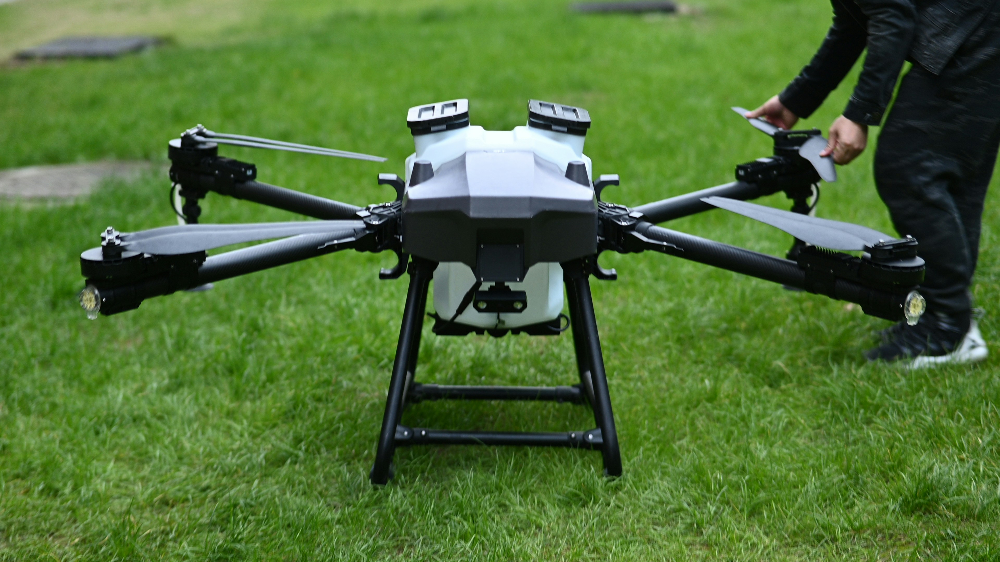

🌱Agro forte, futuro sustentável: equilíbrio entre produção e meio ambiente
A importância das terras agrícolas bem preparadas para o futuro da alimentação
Alimentar uma população que chegará a 10 bilhões em 2050 exige aumentar a produção global de comida em até
70%. Contudo, a expansão agrícola esbarrou nos limites ecológicos da Terra: solos degradados, escassez
hídrica e severas mudanças climáticas. Diante disso, o agro enfrenta o desafio de garantir a segurança
alimentar global migrando urgentemente para modelos sustentáveis e tecnológicos..

Qual a importância da tecnologia no desenvolvimento agrícola?
A integração da tecnologia no setor agrícola não apenas melhora a eficiência e a produtividade, mas também
contribui para a sustentabilidade e a segurança alimentar global. A adoção dessas tecnologias é fundamental
para enfrentar os desafios futuros da agricultura, como as mudanças climáticas e o crescimento populacional.

Referências
Site EMBRAPA. Acesso em 26 de maio de 2025.
OpenAI. Textos gerados pelo ChatGPT sobre o tópico "Tecnologia na Agricultura". 30 de maio de 2025,
https://chat.openai.com.